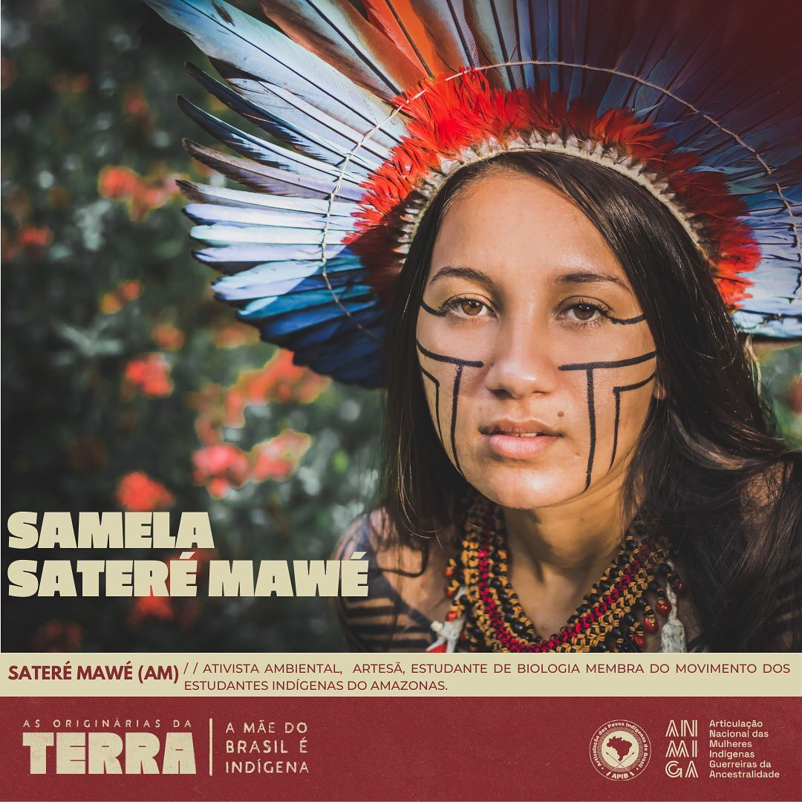

A sustentabilidade, em linhas gerais, para o doutorando em educação Moacir Gadotti é um modo de vida harmônico entre a sociedade, o meio ambiente, a produção e o futuro, sendo assim “bem viver”. No setor social, cultural e político, a sustentabilidade é construída a partir da democracia, da participação popular, de se assegurar o acesso à cidadania e direitos básicos, a manutenção de identidades culturais em convivência pacífica e da distribuição justa de riqueza na sociedade.
Diante de desafios socioambientais do século XXI, tais como a mudança climática e transformação da estrutura econômica com a indústria 4.0, é essencial que se mantenha um olhar de sustentabilidade ambiental e humana não somente para promover os Direitos Humanos, como também para assegurar um futuro para a espécie humana.
Sustentabilidade está em não exuarir populações de seres vivos, como ocorre no manejo sustentável de recursos naturais, peixes, plantas etc nas unidades de conservação e uso sustentável, e nas reservas extrativistas. Está em criar soluções para melhor aproveitar recursos naturais sem prejudicar a capacidade de sobrevivência das gerações futuras, em utilizar energias renováveis, reaproveitar e tratar resíduos e efluentes, reduzir impactos ambientais, ouvir saberes tradicionais e indígenas sobre a vida na Amazônia, promover técnicas de construção com materiais menos poluentes e em conjunção com o meio natural, em lutar pelo desmatamento zero e pelos direitos dos povos originários, na educação ambiental e muitas outras coisas.
A região amazônica é berço de centenas de etnias indígenas e foi lar de cacicados complexos, sociedades altamente estruturadas, com a dos Omáguas e Marajoaras, e sociedades simples que usavam em diferentes medidas a caça, a pesca, a agricultura de coivara e a coleta. Essas populações guardam imenso saber a respeito da floresta, as propriedades de seus seres, seu funcionamento e têm práticas culturais milenares, únicas e extremamentre diversas.
Porém, a partir da conquista do continente americano por nações europeias, os povos originários sofreram com as atrocidades da colonização, do genocídio, da guerra biológica, do apagamento cultural, da violência física e simbólica e do trabalho forçado. Apesar da resistência nativa, a população indígena do Pindorama foi severamente reduzida nesse processo de genocídio, todavia, resiste com sua cultura, existência e ocupação de território até os dias atuais, e luta arduamente por direitos humanos e originários básicos, além de ser a maior defensora da Amazônia.
Alguns povos indígenas da Amazônia são: Yanomami, Sateré-Mawé, Tikuna, Cambeba, Xipaya, Mura, Munduruku, Witoto, Kokama, Baré e Xavante. Dadas as desigualdades e violências de uma sociedade colonizada, esses povos lutam contra a invasão de suas terras, a discriminação e o apagamento cultural. Todas essas violências cerceiam seu direito originário e continuam o processo de etnocídio.
Atualmente, as maiores porções de território homologadas como Terras Indígenas estão na região Norte, que também tem uma forte base cultural indígena, além de ter uma expressiva população originária na zona urbana ocupando os mais diversos espaços com muita luta, como o bairro Parque das Tribos em Manaus e associações como Mura e Sateré Mawé na mesma cidade.
Ribeirinhos que vivem da agricultura de subsistência e extrativismo também são comunidades tradicionais que habitam a Amazônia e são essenciais para seu desenvolvimento sustentável e formação cultural, com importantes tradições e festejos como o boi bumbá. Caboclos, ribeirinhos, quilombolas e indígenas são grandes aliados na luta pela manutenção da Amazônia pois levam estilos de vida menos produtivistas e muito mais ligados à Terra.
O maior bioma de floresta equatorial do mundo e suas populações sofrem intensas pressões de destruição, e sua importância global torna ainda mais urgente a necessidade de luta pelo meio ambiente, direitos humanos e povos originários na região, unindo todos os aspectos de humanidade e meio ambiente.
Um expoente da luta ambiental amazônica foi o seringueiro e militante ecossocialista Chico Mendes, acreano que lutava pela preservação da floresta e direito de extrativismo sustentável pelos povos tradicionais, além de ser o idealizador do modelo Resex (Reserva Extrativista) e amplificador mundial da luta pela Amazônia. Ele criou reservas e promoveu uma educação ambiental emancipadora. Foi morto por grupos paramilitares de desmatadores contra os quais lutava pacificamente.
Indígenas têm ocupado cada vez mais destaque, como Samela Sateré-Mawé, Vanda Witoto, Cacique Raoni, Sõnia Guajajara, Joênia Wapichana e muito mais ativistas que unem socioambientalmente as lutas de bem viver, povos originários e meio ambiente.
Projeto Angelim Vermelho | Desenvolvido por Maria Eduarda Ferreira Rodrigues e Sabrina da Paz Alves | Fundação Matias Machline - 2021